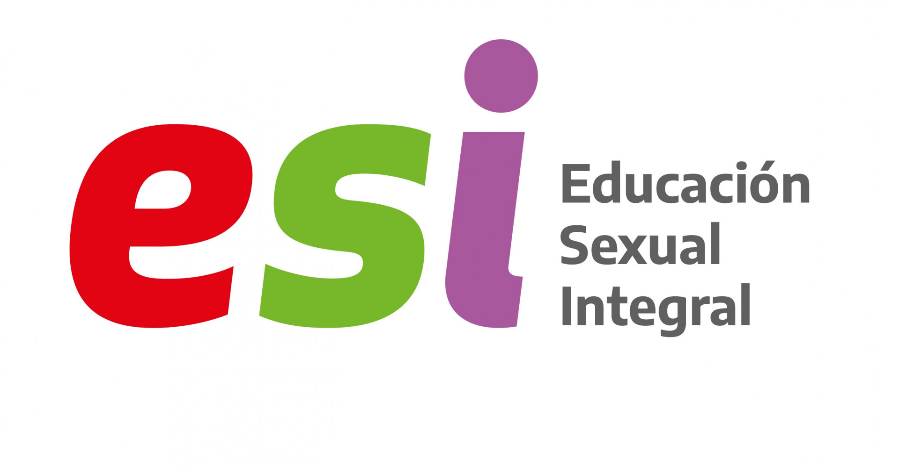
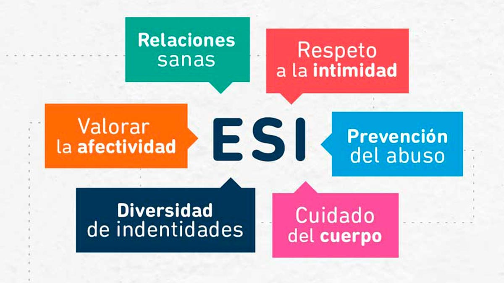
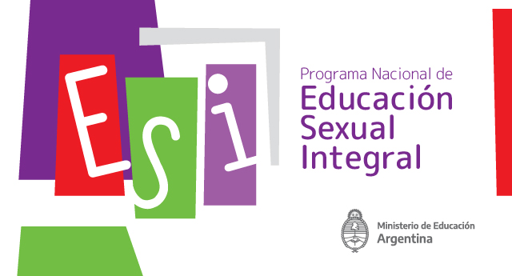

La Educación Sexual Integral (ESI) es un programa educativo que busca proporcionar a los estudiantes una formación completa sobre la sexualidad, abarcando no solo los aspectos biológicos, sino también sociales, emocionales, afectivos, culturales y éticos. Se basa en la idea de que la educación sexual no debe limitarse a la enseñanza de la anatomía o la prevención de enfermedades, sino que debe incluir una visión amplia y respetuosa de la sexualidad humana.
A través de canciones, juegos, cuentos, películas o charlas, cada vez son más las niñas, niños y adolescentes que se animan a contar que pasaron por situaciones de abuso sexual, afirman docentes que en sus clases abordan la Educación Sexual Integral (ESI), la cual consideran una herramienta fundamental ya que da la posibilidad de que transite la palabra.
En 2006, se sancionó la Ley Nacional 26.150 que establece la obligatoriedad de la Educación Sexual Integral en todas las escuelas del país, tanto públicas como privadas. Esta ley surgió como respuesta a la necesidad de abordar la sexualidad desde una perspectiva más abierta y científica, alejándose de enfoques moralistas y promoviendo el respeto por los derechos humanos. La implementación de la ESI se realiza a través del Programa Nacional de Educación Sexual Integral, que proporciona directrices y materiales a las instituciones educativas para asegurar que los contenidos se adapten a cada etapa de desarrollo del alumnado.
ARTICULO 1º — Todos los educandos tienen derecho a recibir educación sexual integral en los establecimientos educativos públicos, de gestión estatal y privada de las jurisdicciones nacional, provincial, de la Ciudad Autónoma de Buenos Aires y municipal. A los efectos de esta ley, entiéndase como educación sexual integral la que articula aspectos biológicos, psicológicos, sociales, afectivos y éticos.
ARTICULO 2º — Créase el Programa Nacional de Educación Sexual Integral en el ámbito del Ministerio de Educación, Ciencia y Tecnología, con la finalidad de cumplir en los establecimientos educativos referidos en el artículo 1º las disposiciones específicas de la Ley 25.673, de creación del Programa Nacional de Salud Sexual y Procreación Responsable; Ley 23.849, de Ratificación de la Convención de los Derechos del Niño; Ley 23.179, de Ratificación de la Convención sobre la Eliminación de todas las Formas de Discriminación contra la Mujer, que cuentan con rango constitucional; Ley 26.061, de Protección Integral de los Derechos de las Niñas, Niños y Adolescentes y las leyes generales de educación de la Nación.
ARTICULO 3º — Las acciones que promueva el Programa Nacional de Educación Sexual Integral están destinadas a los educandos del sistema educativo nacional, que asisten a establecimientos públicos de gestión estatal o privada, desde el nivel inicial hasta el nivel superior de formación docente y de educación técnica no universitaria.
ARTICULO 4º — Las jurisdicciones nacional, provincial, de la Ciudad Autónoma de Buenos Aires y municipal garantizarán la realización obligatoria, a lo largo del ciclo lectivo, de acciones educativas sistemáticas en los establecimientos escolares, para el cumplimiento del Programa Nacional de Educación Sexual Integral. Cada comunidad educativa incluirá en el proceso de elaboración de su proyecto institucional, la adaptación de las propuestas a su realidad sociocultural, en el marco del respeto a su ideario institucional y a las convicciones de sus miembros.
Cada vez hay más pruebas de los numerosos beneficios de la educación sexual integral (ESI), que enseña a adolescentes y jóvenes los aspectos cognitivos, emocionales, físicos y sociales de la sexualidad. Sabemos que la ESI no sólo ayuda a reducir el número de embarazos no deseados y de transmisiones del VIH, sino también la violencia de género. Es una forma segura y eficaz de proteger y empoderar a los jóvenes y de avanzar en la igualdad de género.
Sin embargo, no todos los gobiernos están invirtiendo en programas de ESI, lo que deja a muchos adolescentes y jóvenes sin acceso a información que podría salvarles la vida y ayudarles a tomar decisiones saludables sobre su cuerpo, su vida y sus relaciones.
Sin información sobre salud sexual y reproductiva e igualdad de género, los jóvenes se enfrentan a un mayor riesgo de contraer el VIH o de sufrir un embarazo no deseado, lo que no sólo podría limitar sus perspectivas de futuro, sino también poner en peligro sus vidas. Las complicaciones durante el embarazo y el parto son una de las principales causas de muerte entre las adolescentes de todo el mundo.
Resulta preocupante que actualmente nos enfrentemos a una oleada de desinformación sobre la ESI y sus efectos. Esto está provocando que los responsables de la toma de decisiones de todo el mundo retraigan su apoyo a la misma.
Cuando la ESI no está ampliamente al alcance de los jóvenes, se permite que florezcan prácticas y creencias perjudiciales, incluida la discriminación de género. Estas normas discriminatorias también pueden conducir a un aumento de la violencia sexual y de género. Cuando no reciben la ESI, muchos adolescentes pierden también la oportunidad de entrar en la edad adulta con seguridad y confianza.
Pero no tiene por qué ser así. La ESI puede empoderar a los jóvenes y adolescentes para que conozcan sus derechos, tomen decisiones saludables, permanezcan en la escuela y prosperen. Apoya y refuerza los esfuerzos de los padres, las familias, los proveedores de atención sanitaria y los gobiernos para informar y proteger a los jóvenes, y beneficia no sólo a quienes la reciben, sino también a la sociedad en general.
La ESI es una poderosa herramienta que puede cuestionar normas, estereotipos y prácticas de género perjudiciales que obstaculizan la igualdad de género. Puede ayudar a los jóvenes a comprender el amor, el respeto, el consentimiento, el cuidado y la integridad, contribuyendo así a crear familias sanas y sociedades justas. Y lo que es más importante, puede proporcionarles las herramientas que necesitan para identificar el abuso y la coacción, establecer límites y saber cuándo y cómo buscar ayuda. Cuando los jóvenes aprenden sobre las desigualdades de género, la discriminación y la dinámica del poder, tienen cinco veces más probabilidades de actuar de forma que se eviten con éxito los embarazos no deseados, el VIH y las infecciones de transmisión sexual.